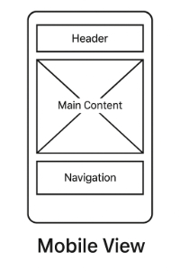

Mobile View
This wireframe shows the layout for mobile devices, including a hamburger menu, stacked navigation, and featured articles.
Promoting Sustainable Living Worldwide
Global Green Living - This name was chosen because the site aims to promote eco-friendly, sustainable living practices across the globe.
The site provides visitors with resources, tips, product reviews, and community interaction to help adopt sustainable lifestyles.
#2C6E49 (Dark Forest Green) — used for headings, navigation, accents.
#A3C9A8 (Soft Sage Green) — used for backgrounds, highlights, and buttons.
Roboto - used for body text for clear readability and a modern feel.
Merriweather - used for headings to provide a professional and classic style.
This wireframe shows the layout for mobile devices, including a hamburger menu, stacked navigation, and featured articles.
This wireframe shows a wider layout with horizontal navigation, a sidebar, and a three-column article grid.